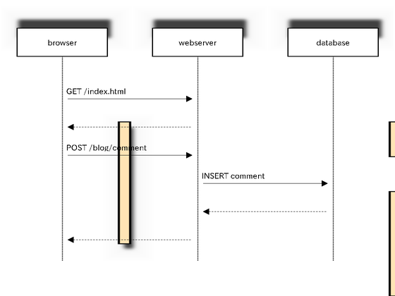
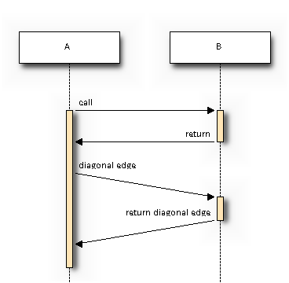
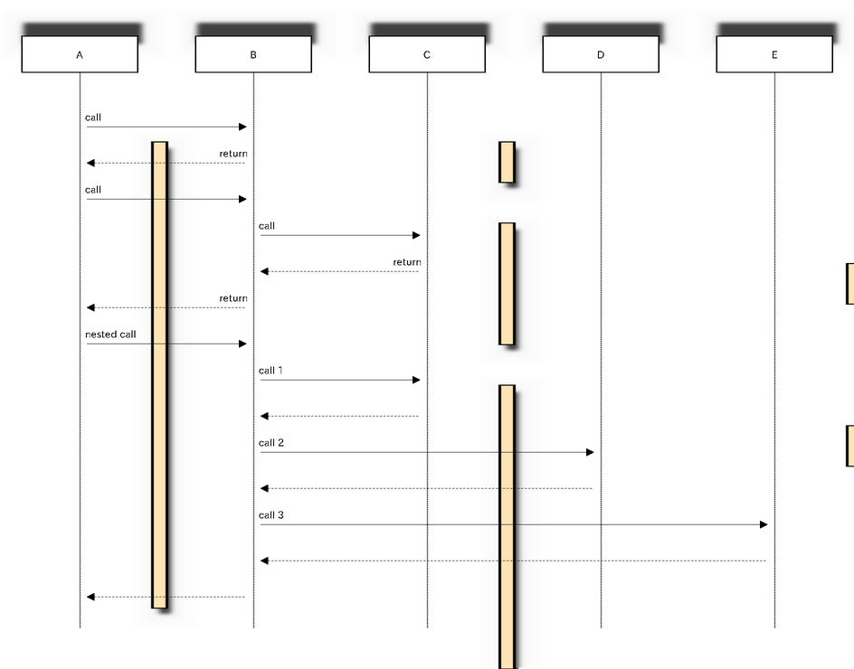
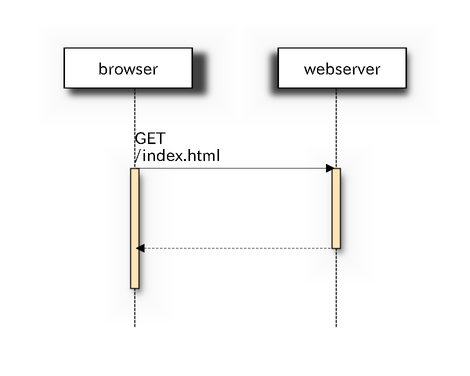

Sample diagams¶
simple diagram¶
diagram {
browser -> webserver [label = "GET /index.html"];
browser <-- webserver;
browser -> webserver [label = "POST /blog/comment"];
webserver -> database [label = "INSERT comment"];
webserver <-- database;
browser <-- webserver;
}

edge types¶
{
// normal edge and doted edge
A -> B [label = "normal edge"];
B --> C [label = "dotted edge"];
B <-- C [label = "return dotted edge"];
A <- B [label = "return edge"];
// asynchronus edge
A ->> B [label = "asynchronus edge"];
B -->> C [label = "asynchronus dotted edge"];
B <<-- C [label = "return asynchronus doted edge"];
A <<- B [label = "return asynchronus edge"];
// self referenced edge
A -> A [label = "self reference edge"];
}
![{
// normal edge and doted edge
A -> B [label = "normal edge"];
B --> C [label = "dotted edge"];
B <-- C [label = "return dotted edge"];
A <- B [label = "return edge"];
// asynchronus edge
A ->> B [label = "asynchronus edge"];
B -->> C [label = "asynchronus dotted edge"];
B <<-- C [label = "return asynchronus doted edge"];
A <<- B [label = "return asynchronus edge"];
// self referenced edge
A -> A [label = "self reference edge"];
}](_images/seqdiag-f939f4059a2e9ae056711ca149380503a8f9d221.png)
attributes of edges¶
{
// edge label
A -> B [label = "call"];
A <- B [label = "return"];
// diagonal edge
A -> B [diagonal, label = "diagonal edge"];
A <- B [diagonal, label = "return diagonal edge"];
}

auto return edge and nested sequense¶
{
// auto return edge
A => B [label = "call", return = "return"];
// nested auto return edge
A => B => C [label = "call", return = "return"];
// nested sequence
A => B [label = "nested call"]{
B => C [label = "call 1"];
B => D [label = "call 2"];
B => E [label = "call 3"];
}
}

diagram attributes¶
diagram {
// Set edge metrix.
edge_length = 300; // default value is 192
edge_height = 80; // default value is 40
// Set fontsize.
fontsize = 16; // default value is 11
browser -> webserver [label = "GET \n/index.html"];
browser <-- webserver;
}
